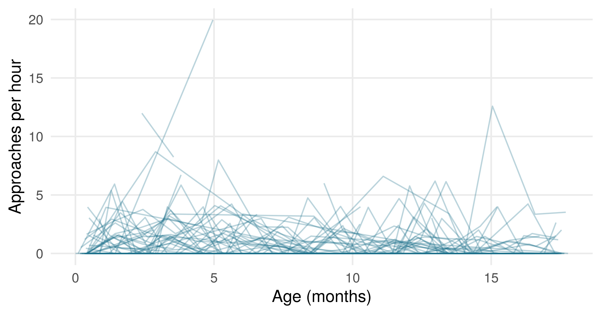
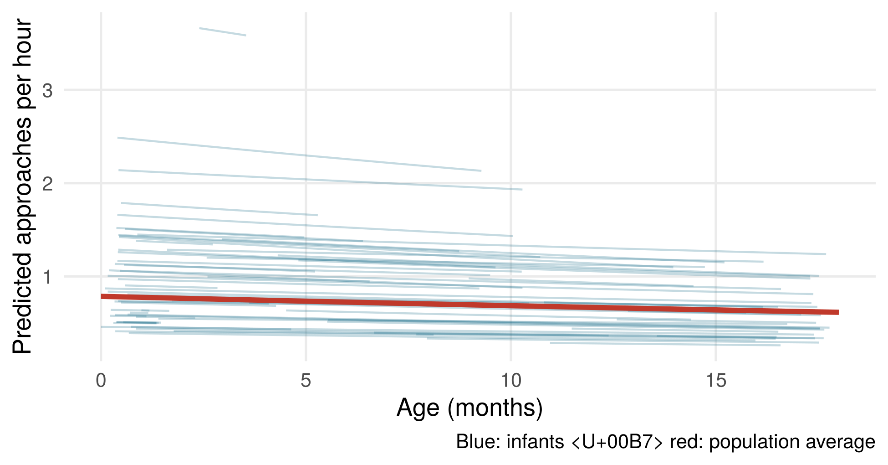

xdata <- read.csv("dataset_mothering_behaviors_Anonymized.csv")Exercises · Session 11
Maternal behaviour over infant development: a Poisson GLMM with real data
Back to session 11.
The data
Mothers’ behaviour towards their infants changes as the infants grow up. In this practical, you analyse how often wild Guinea baboon infants receive approaches from their mothers, using real field data from the DPZ field station Simenti (Senegal):
Dal Pesco, F., et al. (2026). Maternal style does not predict infant growth and survival in wild Guinea baboons. Animal Behaviour.
The data are openly available on OSF (https://doi.org/10.17605/OSF.IO/YH2BW). Download the file and save it in your project folder. Please cite the paper and the OSF repository when you use the data.
Download dataset_mothering_behaviors_Anonymized.csv
Each row is one infant in one month: 582 infant-months from 80 infants of 49 mothers. The variables you need:
| Variable | Meaning |
|---|---|
immature_ID |
infant ID |
mother_ID |
mother ID (some mothers have several infants in the data) |
age |
infant age in days |
imm_focal_duration_sec |
focal observation time of the infant in this month (seconds) |
normal_approach_received_freq |
number of approaches received from the mother |
xdata <- xdata[, !duplicated(names(xdata))] # 'immature_ID' appears twice
xdata$approaches <- xdata$normal_approach_received_freq
xdata$hours <- xdata$imm_focal_duration_sec / 3600
xdata$age.months <- xdata$age / 30.44
xdata$z.age <- as.numeric(scale(xdata$age))Exercise 1: explore the data
How many rows, infants and mothers are there? How many mothers have more than one infant in the data? Plot the rate of approaches (per hour) against age, with one line per infant.
Solution
nrow(xdata)#> [1] 582#> [1] 80#> [1] 49#> [1] 19xdata$rate <- xdata$approaches / xdata$hours
ggplot(xdata, aes(age.months, rate, group = immature_ID)) +
geom_line(alpha = .3, colour = "#1b6f8a") +
labs(x = "Age (months)", y = "Approaches per hour")
Each infant contributes several months, and several infants share a mother: the rows are not independent, and the data have two nested grouping factors (infants within mothers).
Exercise 2: the model we already know
Fit a Poisson GLM of approaches with z.age as predictor. Why do you need an offset, and what does it look like? Interpret the age effect, and check for overdispersion.
Solution
glm.mod <- glm(approaches ~ z.age + offset(log(hours)), family = poisson, data = xdata)
summary(glm.mod)$coefficients#> Estimate Std. Error z value Pr(>|z|)
#> (Intercept) -0.1129134 0.04586247 -2.462001 1.381643e-02
#> z.age -0.2442834 0.04642188 -5.262247 1.423057e-07#> z.age
#> 0.7832656sum(residuals(glm.mod, type = "pearson")^2) / df.residual(glm.mod) # dispersion#> [1] 1.555269Observation time differs between rows, so we model the rate of approaches: offset(log(hours)) (see offset). The GLM reports a clear decline of approaches with age. The dispersion ratio is above 1: the counts vary more than a Poisson model expects (overdispersion), often a symptom of ignored structure.
Exercise 3: add a random intercept for infants
Fit the same model with a random intercept for immature_ID. What happens to the age effect and its standard error?
Solution
ri.mod <- glmer(approaches ~ z.age + offset(log(hours)) + (1 | immature_ID),
family = poisson, data = xdata,
control = glmerControl(optimizer = "bobyqa"))
summary(ri.mod)$coefficients#> Estimate Std. Error z value Pr(>|z|)
#> (Intercept) -0.35153921 0.10512521 -3.344005 0.0008257829
#> z.age -0.06841068 0.06551286 -1.044233 0.2963776425VarCorr(ri.mod)#> Groups Name Std.Dev.
#> immature_ID (Intercept) 0.64346The picture changes completely: the age effect is much smaller and no longer significant. Infants differ strongly in their baseline rate (SD of the random intercept), and because infants are observed at different ages, the GLM mistook differences between infants for a change with age.
Exercise 4: infants within mothers
Several infants share a mother. Add a random intercept for mother_ID. Look at the output: what does the message boundary (singular) fit mean here?
Solution
ri2.mod <- glmer(approaches ~ z.age + offset(log(hours)) + (1 | mother_ID) + (1 | immature_ID),
family = poisson, data = xdata,
control = glmerControl(optimizer = "bobyqa"))
VarCorr(ri2.mod)#> Groups Name Std.Dev.
#> immature_ID (Intercept) 0.64344
#> mother_ID (Intercept) 0.00000isSingular(ri2.mod)#> [1] TRUEThe SD of the mother intercept is estimated as zero: once infants’ baselines are modelled, there is no additional variation between mothers that the data can detect. This is a singular fit. It is not an error, and the fixed effects are unchanged. Whether to keep the term depends on the design, not on the fit: with a nested design, many researchers keep it to represent the structure of the data.
Exercise 5: random slopes, as in the paper
Dal Pesco et al. (2026) included random slopes of age within both mother and infant, without correlations between intercepts and slopes. Fit this model. Which variance components are estimated as (near) zero?
Solution
rs.mod <- glmer(approaches ~ z.age + offset(log(hours)) +
(1 + z.age || mother_ID) + (1 + z.age || immature_ID),
family = poisson, data = xdata,
control = glmerControl(optimizer = "bobyqa"))
VarCorr(rs.mod)#> Groups Name Std.Dev.
#> immature_ID z.age 0.000000
#> immature_ID.1 (Intercept) 0.638724
#> mother_ID z.age 0.076766
#> mother_ID.1 (Intercept) 0.000000summary(rs.mod)$coefficients#> Estimate Std. Error z value Pr(>|z|)
#> (Intercept) -0.35100931 0.10487605 -3.346897 0.0008172162
#> z.age -0.07138771 0.06946104 -1.027737 0.3040733560Again some components sit at zero (singular fit), but the estimate of the age effect barely changes. Removing the correlations (||) is a common first step when complex structures do not converge (see convergence failure); the paper reports the same reason.
Exercise 6: test the age effect and check the model
Test the age effect with a likelihood-ratio test, keeping the random-effects structure. Then check the dispersion of the final model.
Solution
rs.null <- glmer(approaches ~ 1 + offset(log(hours)) +
(1 + z.age || mother_ID) + (1 + z.age || immature_ID),
family = poisson, data = xdata,
control = glmerControl(optimizer = "bobyqa"))
anova(rs.null, rs.mod)#> Data: xdata
#> Models:
#> rs.null: approaches ~ 1 + offset(log(hours)) + (1 + z.age || mother_ID) + (1 + z.age || immature_ID)
#> rs.mod: approaches ~ z.age + offset(log(hours)) + (1 + z.age || mother_ID) + (1 + z.age || immature_ID)
#> npar AIC BIC logLik deviance Chisq Df Pr(>Chisq)
#> rs.null 5 1302.4 1324.2 -646.19 1292.4
#> rs.mod 6 1303.3 1329.5 -645.66 1291.3 1.0623 1 0.3027sum(residuals(rs.mod, type = "pearson")^2) / df.residual(rs.mod) # dispersion#> [1] 1.104892No evidence for a change in maternal approaches with age once the non-independence is modelled. The dispersion ratio is now close to 1: the overdispersion of the GLM was largely due to differences between infants.
Exercise 7: plot the result
Plot the model-predicted rate of approaches over age: one line per infant, plus the population-average line.
Solution
nd <- transform(xdata, hours = 1) # rate per hour
nd$p_inf <- predict(rs.mod, newdata = nd, type = "response")
avg <- data.frame(age.months = seq(0, 18, by = .5), hours = 1)
avg$z.age <- (avg$age.months * 30.44 - mean(xdata$age)) / sd(xdata$age)
avg$p <- predict(rs.mod, newdata = avg, type = "response", re.form = NA) # without random effects
ggplot(nd, aes(age.months, p_inf, group = immature_ID)) +
geom_line(alpha = .25, colour = "#1b6f8a") +
geom_line(data = avg, aes(age.months, p), inherit.aes = FALSE, colour = "#c0392b", linewidth = 1.3) +
labs(x = "Age (months)", y = "Predicted approaches per hour",
caption = "Blue: infants · red: population average")
Exercise 8: report and compare
Write two or three sentences reporting the age effect as you would in a paper, including the model, the effect size on the response scale and the test. Then compare your model with the one described in the methods of Dal Pesco et al. (2026).
Bonus: when the truth is known
Real data never tell you the true values. To check how well the model recovers them, repeat Exercises 2–6 with simulated_baboons.csv: simulated data with the same structure (infant IDs only, plus infant sex), generated with an age effect of −0.3 (log scale, per SD of age), no sex effect, an SD of 0.6 for the infant intercept and an SD of 0.25 for the infant age slope.